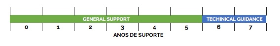

Política de Cliclo de Vida dos Produtos VMware (VMware Lifecycle Matrix)
Blog VMwareCompartilhe esse post nas redes sociais...
Olá Homelabers!
Qual versão do vSphere vocês estão utilizando em produção ou em seus labs?
Particularmente, ainda estou rodando meu lab na versão 6.0.X, mas estou planejando um upgrade para o 6.5 em breve - com posts, aguarde! :)
Outro dia vi um tweet do Emad Younis (@emad_younis) sobre o fim do suporte geral do vSphere 5.5 (caramba já!!!) em Setembro/2018 e resolvi resgatar esse post e que estava nos rascunhos do blog.
https://twitter.com/emad_younis/status/950820777674158081
Hoje quero falar sobre a Política de Ciclo de Vida dos produtos VMware (Lifecycle Matrix), um ponto super importante, mas que vejo pouca gente falando sobre.
Em linhas gerais, a política do ciclo de vida dos produtos VMware é a seguinte:
Os produtos da VMware tem um ciclo de vida de 7 anos, sendo 5 anos de General Support a partir do GA (General Availability) e mais** dois anos de Technical Guidance**.

Fase geral de suporte (General Support Phase)
A fase de suporte geral começa na data de disponibilidade geral de uma versão principal (“GA”) e tem uma duração fixa. Durante a fase de Suporte geral, para os clientes que compraram o suporte da VMware, a VMware oferece atualizações, correções de erros e segurança e assistência técnica, de acordo com os Termos e Condições de Suporte e Subscrição.
Fase de orientação técnica (Technical Guidance Phase)
A orientação técnica, se disponível, é fornecida a partir do final da fase de suporte geral e tem uma duração fixa. A orientação técnica está disponível principalmente através do portal de auto-ajuda e o suporte por telefone não é fornecido. Os clientes também podem abrir um pedido de suporte on-line para receber suporte e soluções alternativas para problemas de baixa gravidade apenas nas configurações suportadas. Durante a fase de Orientação Técnica, a VMware não oferece suporte a novo hardware, atualizações do servidor / cliente / host, novos patches de segurança ou correções de erros. Esta fase destina-se a ser utilizada por clientes que operam em ambientes estáveis com sistemas que operam sob cargas razoavelmente estáveis.
Fim da Vida de Suporte (End Of Support Life)
Um produto atingiu o fim da vida de suporte (EOSL) quando já não é geralmente suportado pela VMware. O fim da vida de suporte para um produto específico é o final do suporte geral ou final da orientação técnica, se disponível para esse produto específico.
Fim da Disponibilidade (EOA) / Fim da Distribuição (EOD)
Um produto chegou ao fim da disponibilidade quando já não está disponível para compra da VMware. Um produto chegou ao fim da distribuição quando a VMware não pode mais disponibilizá-la como download da vmware.com ou distribuir o produto de outras maneiras. O fim da disponibilidade e o final da distribuição podem coincidir.
Resumo do suporte ao ciclo de vida
VMware Lifecycle Product Matrix
Como comentei no começo do post, o vSphere 5.5 está chegando ao fim do suporte em setembro desse ano (2018). A VMware publica uma planilha com o ciclo de vida de todos os seus produtos e essa planilha pode ser encontrada nesse link (pdf)
É importante ficar de olho nos anúncios dos fabricantes - não só da VMware - para se planejar e não ser pego de surpresa e ficar sem suporte.
Deixe ai nos comentários, qual o software mais antigo que você tem em produção hoje?
Mais informações aqui » https://www.vmware.com/support/policies/lifecycle.html
Um abraço e até o próximo post!
–VC
Compartilhe esse post nas redes sociais...Valdecir Carvalho
Nerd e pai orgulhoso da Mariana e João. Profissional Sênior de TI com foco em arquitetura de infraestrutura e cloud computing. Blogueiro, podcaster, palestrante, amante de comunidades técnicas, fotógrafo aposentado e adora jogos antigos.
#vExpert · #VMUGLeader · #VUGBrasil · #vBronwBagBrasil · #VeeamVanguard